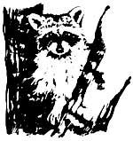
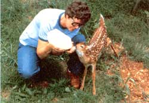
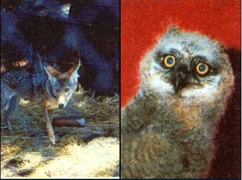
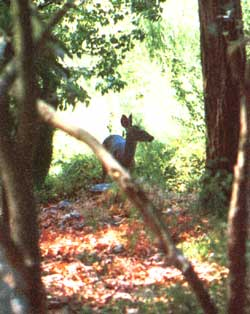
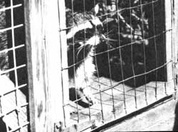

Helping Injured Or Orphaned Wildlife
July/August 1984
Like us, wild animals suffer injury and illness ... and need compassionate
care.
By Johanna Linch
Wild animals are among earth's treasures, fellow creatures in the great web of life. It's a part of our human responsibility to care for them in spirit and in fact.
Every day, all over the United States, thousands of wild animals of various species are struck by cars, shot, trapped, poisoned, attacked by domestic pets, or otherwise maimed and injured by the lethal substance and debris of civilization. Additional wildlings are orphaned when their parents are killed or captured, and others are abandoned when their human owners are no longer willing or able to take care of them.
Some of these animals survive; others die. Some who die do so in agony and only after prolonged suffering.
Many of these animals could be saved if concerned people knew what to do. Helping injured, sick, abandoned, or orphaned wild animals consists of several main steps: [1] removing them from a dangerous or unsuitable area and taking them where they can receive medical attention, shelter, food, and warmth; [2] raising them or restoring their health; [3] training-or retraining-them to be fully functional and independent in the wild; and [4] releasing them in a suitable wilderness area to continue their lives.
Although good-hearted people often try to medicate and raise wild animals they've rescued-and some are successful-steps 2 through 4 most often require the attention of trained, experienced veterinarians and wildlife rehabilitators if the animals' best interests are to be met. Often, painful decisions must be made. What should be done with an animal that's minus a limb, an eye, or one of its normal functions? How long should one try to help a seriously injured creature? The expertise of experienced and compassionate professionals is needed for such judgments ... but the whole process begins with the first step: reporting the animal, or picking it up and getting it to a place where it can receive further help.
For information on these basic procedures, MOTHER contacted several organizations and individuals who are dedicated to the rescue, rehabilitation, and-whenever and wherever possible-release of all species of wild animal. Among these were Jeanne Milewski of the American Wildlife Rescue Service, Rosemary and George Collett of Felicidades Wildlife Foundation, Dr. Richard Brown of the Carolina Raptor Center, J. Davies of the North Carolina Wildlife Resources Commission, Jim Roche of the Western Carolina Nature Center, and Susan Kelly of the Wildlife Rehabilitation Council-all of whom were extremely knowledgeable, caring, and cooperative.
A list of recommended titles on animal rescue and rehabilitation appears at the end of this article. If you're interested in the subject, we strongly urge you to look into these books as soon as possible: They contain information in far greater volume and detail than we can include here.
And please notice that we've avoided the concept of wild animal "pets." Wild animals weren't born to be pets any more than you were, and they don't make good ones. Neighbors, probably. Friends, possibly. But pets ... no.
SAFETY FIRST!
If there's one thing all our contacts agreed on, it's that your safety comes first. Wild animals, even those that appear cute and cuddly, can be dangerous ... and all other considerations aside, you're not likely to be of much help to a wounded animal if you're in trouble yourself In most cases a wild creature will perceive you as still another danger in an already painful and possibly life-threatening situation and is apt to strike out in selfdefense. An attack by an injured heron can easily put out an eye, and an enraged or terrified opossum has some 50 razor-sharp teeth ready to embed in your hand. In addition to attack, there's the very real possibility that disease could be transmitted to you or to your pets.
All in all, then, you should study any situation as thoroughly as possible before you get directly involved. Careful observation can spare you and the animal unnecessary injury; it can also prevent you from abducting a perfectly healthy wild baby that's simply following orders and waiting for momma. Wild creatures don't hire baby-sitters! Their little ones are trained to stay put while the mother hunts or forages for food nearby. Most authorities agree that unless the baby is hurt or obviously distressed, you should observe it-at a distance-over a period of no less than two hours. Try to make sure you really are dealing with a foundling before you pick it up.
One of the best ways to move an abandoned youngster is to use an implement such as a shovel or a piece of cardboard to gently coax or scoop the animal into a box or bag. Another way is to toss a light blanket, towel, or heavy jacket over the creature, gather it into a bundle, and deposit it carefully in some type of sturdy container. (Do not carry such a bundle near your face.) To avoid the danger of overheating or smothering the animal, slide the coverings off as you ease it into a box. Close the flaps-or if it's a sack, tie off the opening-tightly, but make sure there are vents of some kind for air.
It's important to confine a very active animal so it won't do itself harm: Thrashing around can lead to a broken leg or wing. For this reason an enveloping sack is sometimes the best container, or a rope-wound blanket can also be used. Just be certain that the wrapping isn't too tight for good circulation and that the animal can breathe freely and easily.
People who are involved in wildlife rescue generally carry in their cars some extra-heavy leather gloves (such as foundry workers wear), a blanket, and a box prepared with ventilation holes and a soft, smooth cloth liner ... just in case they happen upon a wounded or orphaned animal that needs to be taken to a veterinarian or other facility for care. Most rescue encounters, however, seem to take place between an unprepared (though compassionate) passerby and an injured animal in need of immediate attention. If this is your experience, you can do one of two things. [1] You can make a mental note of the area and as many pertinent details as possible, and then quickly report your find to the proper authorities. These consist of your state wildlife agency, a licensed rehabilitator (see below for further information), a local veterinarian, or the local humane society. Or [2] you can improvise! Injured animals can be picked up in the same way, generally speaking, as orphaned ones. If you have a car but no wildlife tools or box, you can use a folding car-seat pad or floor mat as a lifter, while the trunk can serve as a container. If no car's available, perhaps you can use a jacket or shirt plus a bootlace to wrap the bundle with.
Whatever you do, keep your movements calm, deliberate, and nonthreatening. Plan your approach before you move. Avoid looking directly into the animal's eyes: Many creatures consider this an aggressive act. Handle your patient gently but firmly. And if you have any doubts or misgivings about moving the animal, don't move it. Report it, and let experienced handlers take over.
Assuming you have confined the wildling, take it to a licensed facility, if you know of one, or to safe temporary quarters to wait until it can be transferred to a game warden or other authorized person. Darkness and quiet are calming influences, so it's best to put your patient in a quiet, well-ventilated room with subdued light. Keep the animal warm: A small bird or mammal can be cradled in your hands, while for other animals you might suspend a light bulb over one corner of a box, place a heating pad-set on "low"-underneath the box (not the animal), or lay a hotwater bottle wrapped in soft toweling inside the box where the animal can nestle against it.
Isolate your new patient from all household pets and other people. Offer water, drop by drop (never force food or drink of any kind down an animal's throat). Note as many symptoms and characteristics as you can, and if you hadn't been able to reach your state wildlife agency or nearby rehabilitator earlier, call now for further assistance. Don't delay!
HANDS-OFF SITUATIONS
Some animals, like elk, bears, or cougars, are just too large or too dangerous for any but experienced, trained personnel to handle. And unless you're a veterinarian or experienced wildlife official, or you know for certain that injury, not illness, is responsible for an animal's condition, stay clear of any wild creature that's behaving oddly: acting tame, walking unsteadily, or having convulsions. The problem could be epilepsy, distemper ... or rabies, which is still considered an incurable disease. Contact the authorities as quickly as possible and let them handle the situation. (Incidentally, if an animal suspected of having rabies must be destroyed, it should not be shot in the head, as this must be sent to a lab for analysis.)
WHILE YOU'RE WAITING . . .
Many agencies advise lay rescuers not to offer food to an injured animal but to wait until professional help arrives. Although this avoids the problems created by improper diets and clumsy, perhaps harmful, feeding techniques, Jeanne Milewski challenges the policy, pointing out that many wild animals are found only when they're on the verge of death by starvation. Support for her belief lives in a comfortable pen at the American Wildlife Rescue Service in Scotts Valley, California: an old female bobcat, hit by a truck at the county dump a year ago Christmas because she was too feeble from starvation to get out of the way. "She knew that we were helping her," says Jeanne. "She suffered a broken hip, and right from the start she was very, very easy to handle." Today, her health restored, the little cat is still gentle and obviously happy to be where she is given regular-and in her case, permanent-care. "Food and warmth can spell the difference between life and death," Jeanne declares flatly. She encourages rescuers to cuddle and cradle chilled birds and small mammals as soon as they're found, since they're unable to survive for long without an external heat source.
To feed or not to feed ... it's a dilemma, and we don't have any pat answer. Perhaps the best solution lies in using one's common sense and trying to follow the doctor's dictum "Do no harm." Try to get hold of a veterinarian or licensed rehabilitator right away:
He or she can advise you whether feeding is indicated and tell you which ingredients, utensils, and techniques have proved the most reliable for the type of animal you're holding. They can also help with emergency procedures if the ideal equipment isn't immediately available. If you can't reach an experienced rehabilitator, perhaps you can get hold of one or two of the recommended books which contain valuable advice. Both My Orphans of the Wild and The Complete Care of Orphaned or Abandoned Baby Animals contain food formulas, while Care of the Wild Feathered and Furred has a very good chart listing natural foods for almost 100 different animals, together with suitable substitutes.
If neither authorized personnel nor books are available, and you need to act right away, here are two things to keep in mind:
[1] Avoid feeding cow's milk to infant mammals (or to any birds). It causes diarrhea ... a leading killer of wild orphans. The Spauldings (see book list below) have had good luck with goat's milk. Rosemary Collett speaks of using Borden Company's Esbilac (a powdered formula made for puppies, kittens, and other small animals) mixed with cool boiled water and usually supplemented with vitamin drops. In an emergency-and for a short period only-Rosemary has used evaporated milk as a substitute for the Esbilac. The proportions of these mixes vary according to the size and species of the animal receiving them, and have been arrived at through much trial and error: In general, however, try the Esbilac mixed with water in a ratio of 1:3, or the evaporated milk mixed with water in a ratio of 1:1 or 1:2.
[2] Never feed hamburger to a wild animal. In fact, avoid feeding beef, period. Carnivores e at their prey in its entirety: Ground meat is just not an adequate substitute for whole mouse! If meat is absolutely required, try natural things like earthworms and mealworms, fresh road kills, or organ meats such as chicken heart or gizzard. Incidentally, moistened quality dog kibble can be used as a temporary diet for many species of birds and mammals.
These few suggestions are made with trepidation, and only because emergencies do arise when trained helpers just aren't available.
REHABILITATION AND RELEASE
The rehabilitation of wild animals requires study, training, and-perhaps most difficult of all-self-discipline. It also requires long hours, hard work, a considerable outlay of cash, and to a greater or lesser degree, alterations in one's home and lifestyle. Few people are up to the task. Injured animals need constant checking and care-orphaned wildlings may need to be fed every two hours around the clock-and often require regular applications of medicine or therapy of some sort, and possibly special diets. Even animals that are ready for release are demanding: They must be fed (sometimes via special techniques to reinforce their hunting or foraging skills), kept clean, and prevented from doing themselves or others any harm while waiting for the right moment for release.
In spite of the difficulties, there are many people who "hear the call" and become enmeshed in the work. If you're interested in becoming a rehabilitator or in contacting one near your area, you might begin by phoning your state wildlife agency for the names and addresses of local groups or individuals. Not all state wildlife agencies have this information, however, and you may need to write for assistance. The Wildlife Rehabilitation Council, a nationwide network with headquarters at P.O. Box 3007, Walnut Creek, CA 94598, can put you in touch with members in your region. Another organization is the National Wildlife Rehabilitators Association, c/o Treehouse Wildlife Center, RR 1, Box 125E, Brighton, IL 62012, which has held several symposia on the subject. Lectures, university courses, and two- or three day seminars may be offered in your area (see sidebar); contact your local nature centers, state wildlife agencies, universities, or humane societies to find out if and when these might be given. One thing is immediately apparent: Centralization of information is still desperately needed.
Never underestimate the work these peo ple do. Most of them started with only a little knowledge but a great deal of compassion ... and learned-sometimes at painful cost-that love and hope and care aren't always enough, but knowledge and training, combined with determination and a firm but gentle touch, can help. If we thrill to the sight of a soaring hawk, if we are awestruck by the grace and beauty of the deer, the otter, or the tiny jumping mouse, we might remember the people who reach out every day to help these fellow creatures when they are wounded, sick, or lost.
KEEP IT LEGAL
There are laws to protect wildlife and the people who become involved with them. State permits are required in order to have most species of wild animal legally in your possession. Federal-and, in many cases, state-permits are required for you to have any bird other than a house sparrow or starling. (Technically it's illegal for anyone without such a permit to pick up an injured bird, though few game wardens would be inclined to press the issue if you were trying to save the creature's life.)
One reason for such laws is to protect wild youngsters from being kidnapped from their homes. Another is to protect wildlings-especially predators-from seizure by people who believe that possession of such animals imbues the owner with some sort of macho or exotic appeal. Aside from the inherent cruelty of capturing and confining wild animals who were born to run free, to hunt, and to interrelate with others of their species, such possession entails the problem of control. Many creatures are not only unable to be house-trained, but unable to be trained at all. Some owners have the unfortunate animals definged and declawed, thus dooming them to perpetual custody or death. All too often the once-proud owners discover that the care and expense involved in maintaining a wild animal are so great that they want to get rid of the creature.
Wild animals that have been treated like pets can neither be returned to the wild nor placed in a normal public zoological park with others of their kind. They don't have the skills-and sometimes the fundamental equipment-to survive. Our laws are inadequate and enforcement is close to nonexistent, but the purpose of the regulations is to protect against harm. So unless you're familiar with the laws, you should check with your local branch of the state wildlife office before you get involved in an encounter with a wild animal.
If you're going to help, make it legal.
A PLACE IN THE CHOIR
For many people the question in all this is, Why bother? Some people get involved through their fundamental sense of purpose in life and their spiritual beliefs. Others have more practical reasons: Wildlife, they point out, is an integral part of the natural world in which we live and is essential in maintaining nature's balance, even though we aren't always very perceptive about the role of certain creatures. And, of course, without a healthy wildlife population, hunting and fishing would be pointless exercises.
Everyone's entitled to his or her own reasons. One that is simple and most satisfying can be said in four words: Do it for joy. As folksinger Bill Staines sees it, we're all here together, singing up a storm of praise.
All God's critters got a place in the choir
Some sing low, some sing higher
So me sing out loud on the telephone wires,
And some just clap their hands,
Or paws,
Or anything they got now.
Books that MOTHER found particularly informative (and entertaining, as well) include the following:
My Orphans of the Wild by Rosemary Collett with Charlie Briggs (J.B. Lippincott Co., NY, 1974). This book, possibly the most useful of all, is currently out of print. A few copies may still be available from Felicidades Wildlife Foundation, P.O. Box 490, Waynesville, NC 28786 ($10.00 per copy plus $1.50 postage and handling), or you can check at your local library.
Care of the Wild Feathered and Furred by Mae Hickman and Maxine Guy (Orenda-Unity, CA, 1973); also out of print but-again-try your library.
Care of the Wild by W.J. Jordan and John Hughes, available from Rawson Associates for $13.95 (hardbound) or $8.95 (paperback), plus $ 1.00 for shipping and handling. Mail your check (made out to Rawson Associates) and order to Scribner Book Companies, Front and Brown Sts., Riverside, NJ 08075.
The Complete Care of Orphaned or Abandoned Baby Animals by C.E. and Jackie Spaulding, available for $12.95 prepaid from Rodale Press, 33 E. Minor St., Emmaus, PA 18049.
Wild Orphan Babies by William J. Weber, available for $4.70 plus your state's sales tax and $1.50 for shipping and handling from Holt, Rinehart and Winston (Attn: Ordering Dept.), 383 Madison Ave., New York, NY 10017.
The verse from Bill Staines's song "A Place in the Choir." Copyright© 1978, Mineral River Music (BMI) is reprinted with permission of Mineral River Music (BMI), Box 292, Dover, NH 03820.
Some Who Care
Some people seem to have a special gift for healing, and, with experience and common sense to guide them, refuse to give up on "hopeless" cases. Such a person is Jeanne Milewski', founder-director of the American Wildlife Rescue Service, an independent, state-authorized organization located at 1296 Conference Drive, Scotts Valley, CA 95066 (4081335-3232 or 335-2155). Backed by Jeanne's remarkable rate of success, AWRS has been in operation for 16 years.
Articulate, imaginative, and intense, Jeanne is something of a maverick, unwilling to accept funds or affiliations that would dictate terms on the animals she takes in such as requiring A WRS to euthanize severely wounded, sick, or intractable animals before she's had a chance to work with them. Jeanne herself says of A WRS that it's "the last stop before the bullet"... and she means it. The organization was incorporated as a zoological park so that, bylaw, they are able to keep healthy, but permanently handicapped, animals. While her primary goal with injured and orphaned wildlings is to cure or raise them and release them, Jeanne has kept unreleasable animals for over fifteen years, providing them with constant personal care in a kind of retirement home atmosphere. Sometimes, Jeanne says as she gazes around at the menagerie A WRS has maintained faithfully over the years, she feels it's an animal geriatric center!
AWRS isn't fancy. Virtually every structure in the place has been put together by volunteers with donated materials, but the priorities are clear. The office may be a ramshackle little cabin hardly bigger than an outhouse, but Clyde, the neutered, de-clawed African lion who was someone's backyard "pet" for eight years, has a fine, large outdoor pen with shelter from the sun, a house den, and a huge, rubber-coated steel wrecking ball, which he totes around as a plaything.
Sometimes the financially pressed service seems to run on faith alone. "We have people who call up and say, 'I can't do anything else for you, but I'll pray for you, ' "Yeanne says. "That helps. There are many times when prayer has saved this organization, you know. "
George and Rosemary Collett are the founders of Felicidades Wildlife Foundation, Inc. (P. 0. Box 490, Waynesville, NC 28786; 704/926-0192). Wildlife rehabilitators and photographers for 20 years and recipients of numerous awards, they've come to believe more and more in the vital need for environmental education. Traveling in "The Ark" and "The Dom, " their van and trailer, they take time out from their work with animals to tour various states every year with lectures and intensive 2-1/2 day courses on the nitty-gritty of wildlife rehabilitation.
Rosemary, author of numerous articles and My Orphans of the Wild (see end of main article), is a dynamic and entertaining speaker - keen, well-organized, and knowledgeable. Lectures and courses, crammed with detail and broad in scope, are spiced with beautiful slides and introductions to one or more of the wildlife helpers who accompany them on the tours: animals who, for one reason or another, may not be released to the wild. Denied full freedom, they are active and endearing participants in the education of thousands of people.
"Our aim is to teach others to care, " she says, "because that's where it all begins."
|
 Rosemary Collett of Felicidades Wildlife Foundation bottle-feeds an orphaned fawn. Most wild animal foundlings must have a specific formula and can die if fed regular cow's milk. |
 A coyote pup and fledgling owl are just two of the creatures wildlife rescuers help. |
 The goal is to return each animal to the wild whenever possible. |
|
 Jeanne Milewski cares for a variety of animals at the American Wildlife Rescue Service: |
 |
 |